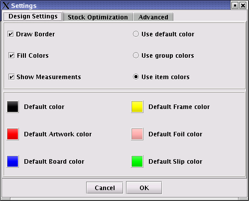

Changing RSF environment settings
In order to edit the environment settings, select Settings | Settings and select the Design Settings tab. The following dialog will be displayed:

The
following display settings are editable:
|
Draw border |
Draws an outline border to all the items in the design. This can be used to highlight individual items more clearly. |
|
Fill colors |
Fills each item in the design with the selected color. |
|
Show measurements |
Display measurement information in the design view. |
|
Use default color |
All items are painted in the same general default color. |
|
Use group colors |
Default colours can be assigned to each item group (i.e. boards, frames etc). Select this button to use the default group colours when painting design items. |
|
Use item colours |
The chosen colour of each individual colour is used when painting designs. |
|
Default colours |
The general and group default colours can be selected by clicking on the particular button. |